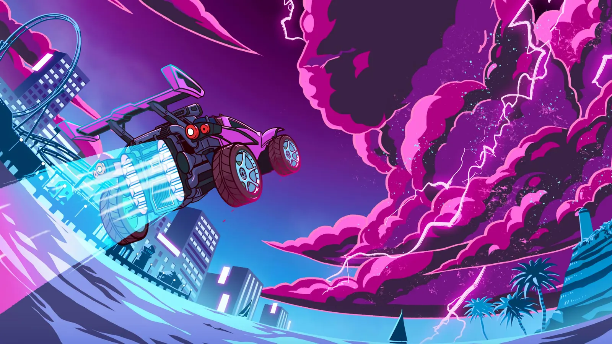
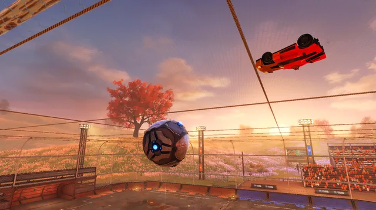

Ceiling Shot
 Démonstration par Hato
Démonstration par Hato
Difficulté
2/5
Utilité
3/5

0:00 / 0:58
× 0,5Boucle
Pourquoi utiliser cette mécanique ?
Quand la balle est en hauteur, il est souvent possible de se servir du plafond pour attaquer de manière plus imprévisible que d'habitude.
Le ceiling shot permet d'être plus à l'aise avec le plafond, en plus d'ouvrir des angles de tir qui ne sont pas disponibles avec des techniques aériennes traditionnelles, offrant ainsi plus de diversité dans les stratégies offensives.
Étapes
-
{{s.n}}
{{s.t}}